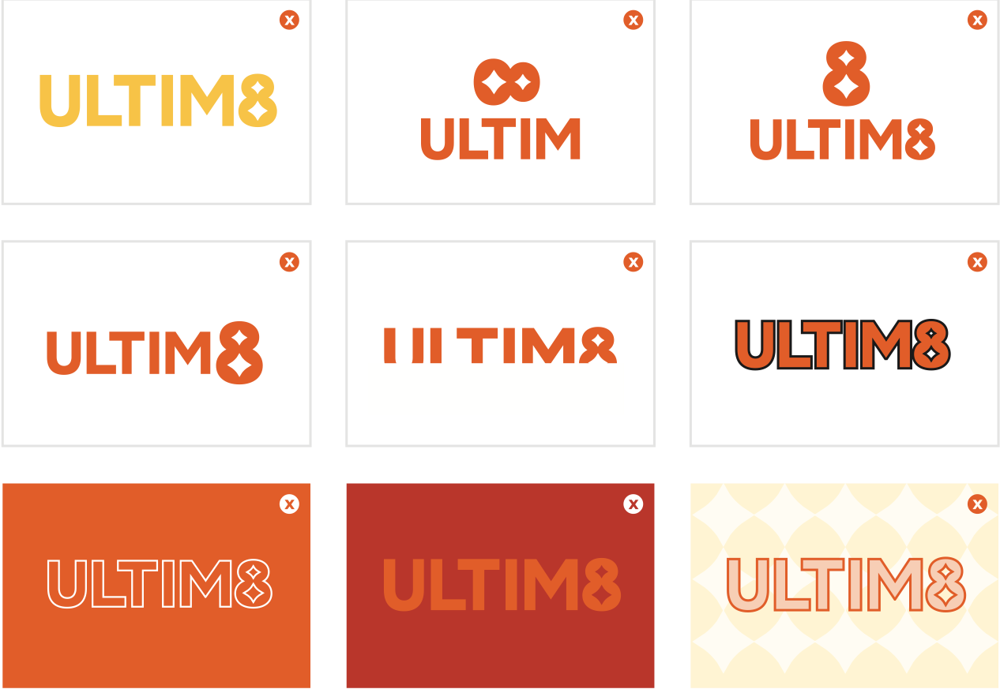
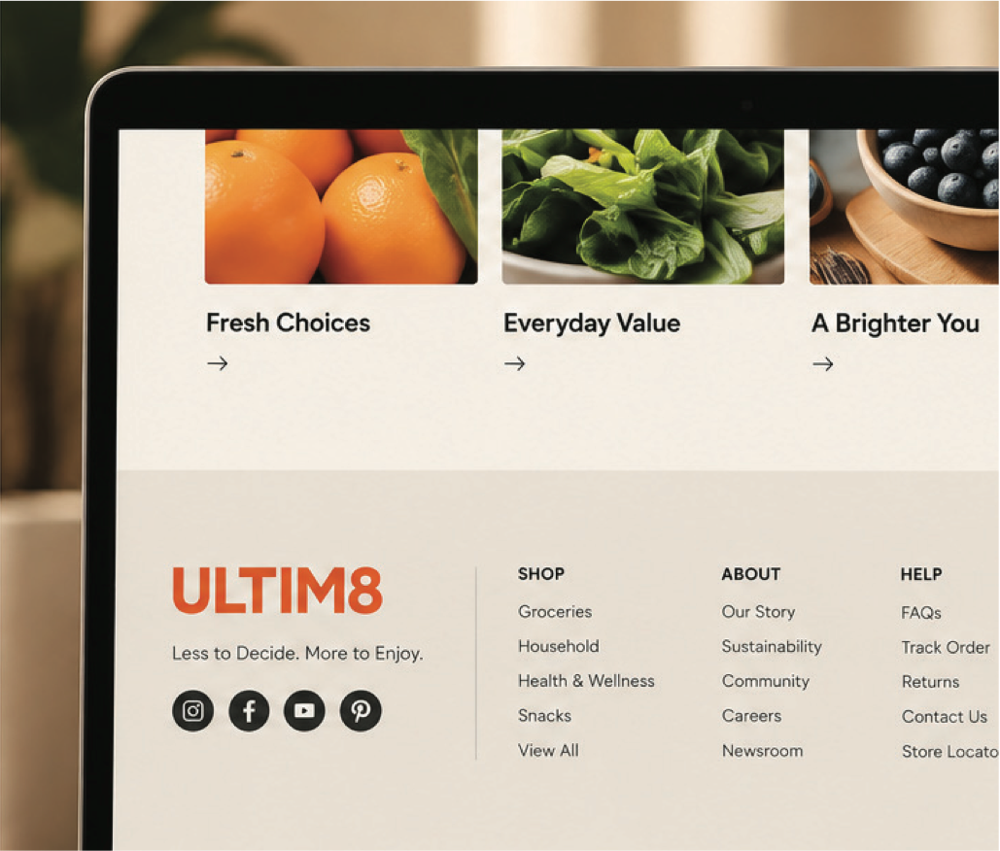

Primary
Identity
Signature
Logo
The name ULTIM8 represents our eight-dimensional shopping experience, designed to make everyday shopping simpler, smarter, and more intuitive.
The diamond-shaped elements within the number 8 symbolize intelligent guidance (AI), clarity, and balance. Their symmetrical forms convey harmony and calmness, while the open negative space reflects our commitment to cognitive relief.
Our primary logo is the preferred expression of our brand identity and should be used consistently across major brand communications, including storefronts, app splash screens, website headers, billboards, and brochures. It should always take precedence when sufficient space and visibility allow for clear recognition.
Monochrome
Classics
The black and white logo variations provide versatility, clarity, and adaptability across a broader range of brand communications. They are used when the primary orange color is unsuitable, or when stronger contrast is required.
Single-color variations offer a cost-effective and practical solution for applications with limited printing capabilities. Eliminate color inconsistencies caused by varying production methods.
Black and white variations are preferred when contrast, simplicity, or production requirements take priority Can be used in image overlays, editorial layouts, and photographic advertisements, black-and-white documents, and receipts.
Tap a background to see the approved logo color for it.
Logo
Room
The minimum clear space around our wordmark is equal to half the height of the number “8.” This proportional measurement creates a consistent spacing system that scales naturally with the logo across different sizes and applications.
Maintaining this space preserves the logo’s visual hierarchy, legibility, and recognition by preventing surrounding text, graphics, or other elements from competing for attention. It also gives our wordmark room to breathe, reinforcing the clarity, balance, and simplicity of our brand identity.
New Batch
Logo
Our logo should be applied consistently across all brand communications to maintain a strong and recognizable visual identity. Following these guidelines ensures clarity, legibility, and a unified brand experience across every touchpoint.
Expired
Logo
Incorrect logo applications can weaken brand recognition, compromise legibility, and create visual inconsistencies. To protect the integrity of our identity, we avoid altering the logo’s proportions, colors, typography, or original design elements.

Logo
Variety Pack
Logo Mark
The standalone 8 serves as a recognizable visual shorthand for ULTIM8, strengthening brand recognition without relying on the full wordmark.
The diamond-shaped elements within the 8 form the foundation of a dynamic visual system. These elements can be adapted into service-specific graphics. This flexible approach creates a unified yet adaptable brand identity, connecting different services through a consistent visual language
The symbol is used where a compact, recognizable brand presence is preferred over the primary logo.
Used as App icons, favicons, social media profile icons, and interface elements, receipts, shopping bag, environmental graphics, and shopping carts.
Logo
Variety Pack
Stacked Logo
The stacked logo provides an alternative arrangement of the primary identity, designed for compact spaces. It ensures brand visibility and legibility where the horizontal logo may not fit effectively.
This variation compliments the primary logo and should be used when the available space makes the horizontal arrangement less effective.
The stacked variation is preferred for applications where vertical composition and efficient use of space are essential. Can be used in vertical pop-up banners, narrow posters, small-format advertisements, glass door graphics and pillar signage.

Logo
Variety Pack
Type Logo
ULTIM8
The logotype prioritizes readability and clarity by presenting the complete brand name in a simplified typographic form.
It serves as an alternative when the primary logo’s intricate details may lose visibility at smaller sizes or in text-heavy applications. The logotype provides a clean, professional, and versatile expression of the brand identity.
The logotype is preferred for applications where clear brand identification, legibility, and seamless integration with text are essential. Can be used in official letters, invoices, reports, contracts, press releases, website footers, internal app pages, and corporate announcements.


Logo
Variety Pack
TAGLINE LOGO Tagline logo variation creates an emotional connection with customers and strengthens brand positioning.

“Less to Decide. More to Enjoy.” reflects commitment to reducing decision overload through curated choices and guided shopping experiences. It emphasizes giving customers more confidence, less mental effort, and more time to enjoy life.
“Less to Decide.
More to Enjoy.”
Used in brand storytelling and experience-focused touchpoints, including AI assistance kiosk welcome screens, interactive shopping demonstrations, customer engagement campaigns, and brand manifesto displays. Unlike other logo variations, this lockup focuses on communicating the brand promise rather than identification alone.
Typography
Family Pack
Pacaembu Typeface
Pacaembu is our contemporary sans-serif typeface, chosen for its clean, modern aesthetic that reflects ULTIM8’s visual identity. Its friendly and approachable letterforms complement our empathetic, welcoming, and customer-focused personality.
Designed to support applications such as wayfinding and outdoor communication, Pacaembu offers strong legibility across physical and digital touchpoints. With seven main weights, it provides the flexibility to create clear visual hierarchy across signage, promotional materials, and digital platforms.
Our ULTIM8 logotype uses Pacaembu Semibold, establishing a confident yet approachable brand presence.
Font Usage — click any line and type to test
Make-up
Palette
Our warm color palette creates a bright, energetic, and welcoming shopping environment that reflects ULTIM8’s friendly and approachable personality.
Orange, our primary color, brings warmth, optimism, and strong brand recognition, while complementary pastels create a sense of comfort and visual balance. Together, these colors establish clear visual hierarchies, reduce cognitive overload, and make everyday shopping feel simpler, more enjoyable, and intuitive.
Click a swatch to copy its HEX code.